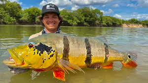

 El tucunaré es conocido por su gran tamaño y colores vibrantes. Es un depredador voraz que juega un papel importante en el control de poblaciones de peces menores, manteniendo el equilibrio del ecosistema acuático.
Habita ríos y lagunas con aguas claras y vegetación abundante. La sobrepesca y la destrucción de su hábitat natural han puesto en riesgo sus poblaciones en la región.
DATO CURIOSO: El tucunaré es muy apreciado en la pesca deportiva por su fuerza y agilidad, lo que lo hace un símbolo cultural en muchas comunidades amazónicas.